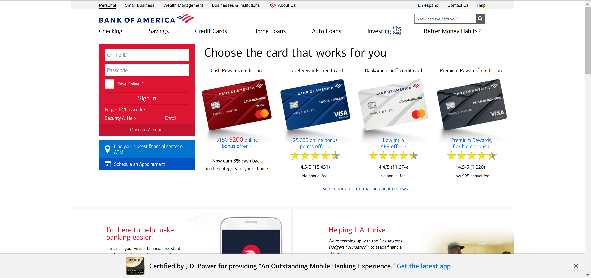

Usability Test for Appointment feature.

In this blog I am testing the "Appointment" feature on Bank of America Website.
Introduction.
This test was conducted in a controlled environment. Tester were given clear instructions about the task. Tester is starting on the Bank of America homepage and they are supposed to find and setup an appointment for banking service.
Top Three Usability problems.
All three testers came across some similar problems. These are the most common problems:- Length of time to locate the option for appointments (visibility, navigation bar, and search function).
- After finding the option it was not clear from the images on the page what should be the next step.
- When selecting date and time for scheduling site dose not respond with a message for “no availability”.
Feedback and Suggestions.
Two of the testers did bank with the same bank and where comfortable setting up appointments from their mobile banking app. The other tester banked with another bank and their bank does not have option for setting up appointments online. Testers also suggested as a user they would not think about setting up appointments. If they had an issue with bank product, they would just contact customer service. Testers did have some really good suggestions for improving user experience. Incorporate Appointments in navigation bar, create tab / button, use large font size so it stands out, and use related image.